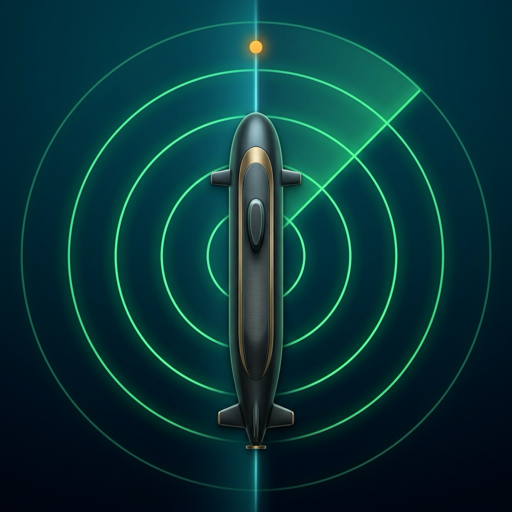

CreaseTactics
Turn-based submarine tactics across the fold · Paid once ($3.99)
English · Overview
CreaseTactics turns iPhone Duo laid flat into a shared tabletop submarine commander table. Player 1 commands the upright bottom bay, Player 2 commands the rotated 180° top bay, and the central hinge divides the front line.
- Face-to-Face Duel: Both fleets default to hidden behind an accessible Show/Hide Privacy Curtain, with tap-then-confirm torpedo fire and four one-use tactical abilities (Sonar Decoy, Deep Dive, Recon Drone, Radar Blackout).
- 15-Sector Campaign & Move & Pass: Battle 5 AI Admirals driven purely by public sonar reports (anti-cheat by construction) or pass a single iPhone/iPad between players.
- 5.4" Cover Daily Sonar: Closed on the cover display, solve a deterministic daily 5×5 acoustic triangulation puzzle in 3 shots.
- 100% Offline & Hardware-Safe: No GameKit, no internet permissions, no accounts, no ads, and zero rapid hinge flipping or slamming.
Türkçe · Genel Bakış
CreaseTactics, masaya düz konulan iPhone Duo’nun katlanma çizgisini iki denizaltı komutanı arasındaki cephe hattına dönüştürür. 1. Komutan alt radarı, 180° döndürülmüş 2. Komutan ise üst radarı yönetir.
Erişilebilir filo gizlilik perdesi, 4 taktik yetenek, 15 görevlik yapay zeka seferi, standart cihazlarda Hamle ve Devir modu ve kapak ekranında günlük 3 atışlık akustik bulmaca sunar.
Deutsch · Überblick
CreaseTactics verwandelt das flach liegende iPhone Duo in ein taktisches U-Boot-Duell über die Mittelfalz. Kommandant 1 steuert unten, Kommandant 2 um 180° gedreht oben.
Mit barrierefreiem Flotten-Sichtschutz, 4 taktischen Gegenmaßnahmen, einer 15-Missionen-Kampagne, Zug & Übergabe für jedes iPhone/iPad sowie dem täglichen 3-Schuss-Cover-Sonarrätsel.